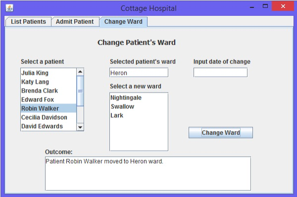

b. i. Design heuristic Prevent errors
Issue The wrong combination of date, time and working set could be selected and added to the scheduled exercises box in error.
Suggested improvement A confirmation box could pop up with the three pieces of information and two buttons to click on, one saying confirm and the other one saying cancel.
ii. Design Heuristic Use simple grouping and ordering
Issue The Edit Working Set button is placed away from the list of the working set, making it appear not related to that, and as though it is connected to the scheduled exercises box which it is under.
Suggested improvement Move the Edit Working Set button to underneath the working set list.
iii. Design heuristic Minimise users’ memory load
Issue The user may wish to change one part of a scheduled exercise, for instance the time, but to do this they need to delete the whole exercise and remember the two other parts (date and working set), to then re-enter all three to create a new scheduled exercise.
Suggested improvement Add an edit button under the Scheduled Exercises list, which gives a pop up box showing the previous selections and having each part be modifiable.
c. Widget table for the Schedule Routine Safety Check use case
| Information | Input or output | Widget |
|---|---|---|
| Routine safety check | Input | List of safety checks |
| Day of the week (Monday – Sunday) | Input | List of days |
| Time (24 hour clock) | Input | Text field |
| Company building | Input | List of company buildings |
| Message showing which kind of safety check has been scheduled, with the start time and duration | Output | Dialogue box |
iv. private void displayPatientsWards()
{
Patient thePatient = (Patient)changeWardPatientList.getSelectedValue();
Ward patientWard = cottageHospital.getWard(thePatient);
patientWardField.setText(patientWard.toString());
Collection<Ward> wards = cottageHospital.getWards();
List<Ward> otherWards = new ArrayList<Ward>();
for (Ward eachWard : wards)
{
if (patientWard != eachWard)
{
otherWards.add(eachWard);
}
}
changeWardNewWardList.setListData(otherWards);
}
c. i. private void changeWardPatientListValueChanged(javax.swing.event.ListSelectionEvent evt)
{
displayPatientsWards();
}
ii. private void doChangeWard()
{
String dateString = changeWardDateField.getText();
M256Date theDate = null;
Patient thePatient = (Patient)changeWardPatientList.getSelectedValue();
M256Date oldDate = (M256Date)cottageHospital.getLastWardChangeDate(thePatient);
Ward newWard = (Ward)changeWardNewWardList.getSelectedValue();
try
{
theDate = new M256Date(dateString);
}
catch (Exception e)
{
changeWardArea.setText("Error: Incorrect date format");
return;
}
if (cottageHospital.getLastWardChangeDate(thePatient) == null)
{
cottageHospital.changeWard(thePatient, newWard, theDate);
changeWardArea.setText("Patient " + thePatient.getName()
+ " moved to " + newWard.getName() + " ward.");
displayPatientsWards();
changeWardDateField.setText("");
return;
}
else
{
if (theDate.after(oldDate))
{
cottageHospital.changeWard(thePatient, newWard, theDate);
changeWardArea.setText("Patient " + thePatient.getName()
+ " moved to " + newWard.getName() + " ward.");
displayPatientsWards();
changeWardDateField.setText("");
return;
}
else
{
changeWardArea.setText("The supplied date is not after the previous change of ward");
return;
}
}
}
iii. private void changeWardButtonActionPerformed(java.awt.event.ActionEvent evt)
{
doChangeWard();
}
v. private void changeWardScreenMouseClicked(java.awt.event.MouseEvent evt)
{
displayChangeWardPatients();
}
